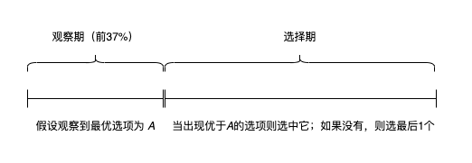

最优停止策略
·
xiebro
37%法则的智慧
当你面对一连串的选择（比如租房、招聘、甚至约会），如何在不回头的情况下最大化选到最佳选项的概率？最优停止理论给出了一个优雅的解决方案——37%法则。
核心思想
- 观察期：拒绝前37%的选项（仅用于建立标准）。
- 选择期：在剩下的选项中，选择第一个比观察期内所有选项都好的。
- 如果后续没有更好的，则必须接受最后一个。

为什么是37%？
数学证明，当选项数量足够大时，37%（即1/e）是最优观察比例，并且能让你以约37%的概率选到最佳选项。这一策略平衡了探索（收集信息）和利用（做出选择），适用于许多现实决策场景。
蒙特卡洛-模拟验证
library(tidyverse)
library(scales)
library(furrr)
set.seed(42)
plan(multisession, workers = availableCores() - 1)
# 创建规则函数 -----------------------------------------------------------------
# 模拟1次策略执行的过程
# 参数：
# glb_nums: 全局可选项
# obs_ratio: 观察期比例（例如0.37）
# 返回：
# boll, 是否选到全局最优
rule_func <- function(glb_opts, obs_ratio) {
n <- length(glb_opts)
# 全局最优选项
glb_best <- max(glb_opts)
# “观察期”最优选项
obs_n <- floor(n * obs_ratio)
obs_opts <- glb_opts[1:obs_n]
obs_best <- max(obs_opts)
# “选择期”选择结果
slct_opts <- glb_opts[(obs_n + 1):n]
if (obs_best == glb_best) {
# 当全局最优结果已在“观察期”出现，则接受“选择期”的最后1个选项
selected <- tail(slct_opts, 1)
}else{
# 否则，在“选择期”寻找第一个比“观察期最优”更好的值
for (i in seq_along(slct_opts)) {
if (slct_opts[i] > obs_best) {
selected <- slct_opts[i]
break
}
}
}
# 返回是否选择了全局最优
selected == glb_best
}
# 执行模拟验证 -----------------------------------------------------------------
step <- 0.01 # 模拟“观察期”比例的步长
ratios <- seq(0.01, 0.99, by = step) # 模拟不同的“观察期”长度
trials <- 100000 # 对每个“观察期”的模拟次数
opts <- 1:100 # 全局选项（数字越大则代表越优）
res <- ratios |>
future_map(~ {
ratio <- .x
1:trials |> map_vec(~ {
rule_func(glb_opts = sample(opts), obs_ratio = ratio)
})
}, .progress = TRUE) |>
map_dbl(mean)
optimal_ratio <- round(ratios[which.max(res)], 4)
optimal_success_rate <- round(max(res), 4)
# 可视化 -----------------------------------------------------------------------
data.frame(ratios = ratios, rate = res) |>
ggplot(aes(x = ratios, y = rate)) +
geom_line(linewidth = 1, color = "steelblue") +
geom_vline(xintercept = optimal_ratio, lty = 4, col = "salmon") +
geom_hline(yintercept = optimal_success_rate, lty = 4, col = "salmon") +
scale_x_continuous(labels = scales::percent) +
scale_y_continuous(labels = scales::percent_format(accuracy = 1)) +
labs(
x = "Observation Ratio",
y = "Probability of Selecting the Best Option",
title = "Optimal Stopping Strategy Success Rate Analysis",
subtitle = sprintf(
"Optimal point: %.1f%% observation → %.1f%% success",
optimal_ratio * 100, optimal_success_rate * 100
)
) +
theme_minimal()

从模拟结果中看到，当选项数量为100个时，最优“观察期”长度是0.38（接近于37%），基于该“观察期”长度，选到最优选项的概率是0.372（也同样接近于37%，也许这就是—-数学之美）。
37%法则的数学证明中提到：“当选项数量趋近于无穷时，最优“观察期”长度也将逼近37%(1/e)”。所以在不同选项数量的情况下，要酌情考虑是否使用37%作为“观察期”。